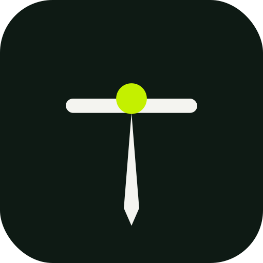

The tattoo artist’s studio
Sketch, stencil, on-body try-on, 3D turnaround and animation — one window. The machine stays in your hand, and so does the final say on every line.
in
Create a sketch ▾

TATTOO TUTSketch, stencil, on-body try-on, 3D turnaround and animation — one window. The machine stays in your hand, and so does the final say on every line.
PRO renews 28 Aug · with us since March · DEMO DATA
That is what the tool has actually bought you. Not features — hours you did not spend redrawing at midnight.
Three tiers, no cheap one-off packs. The price you join at is the price you keep — it does not move when we launch.
What is moving in the tattoo world, interviews with artists, new tools, collabs and contests. Read it, open the tool, get better at it.